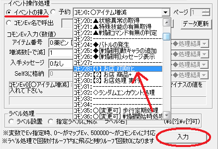
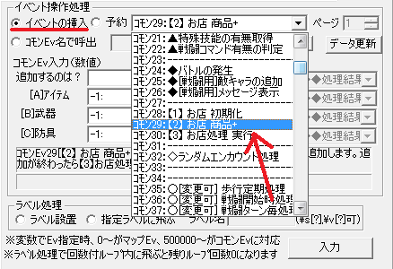
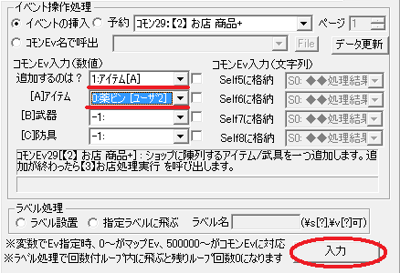
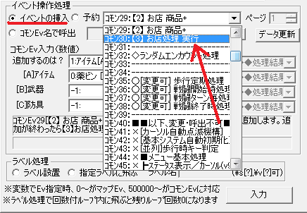
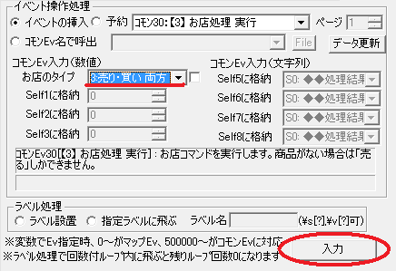
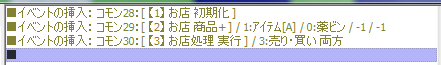
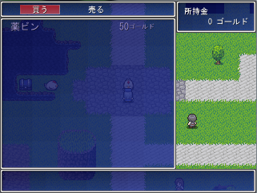
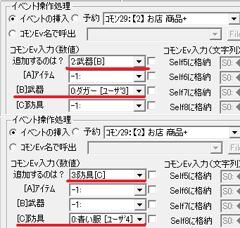
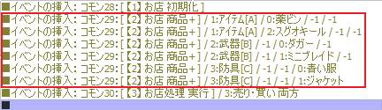

・まずマップ選択
切り替えて下さい。
・適当な場所にイベントを作成して
ニワトリの画像を設定しておきます。
（ここでは右の画像の位置に設置）
→ 分からないときは、
◆新しいイベントを作ってみたいの
【1】～【5】までの手順をまねてください。

【目標】
サンプルゲームの「サンプルマップＡ」内に、
「薬ビン」が買えるお店イベントを作ります。
| 【1】 ・まずマップ選択 切り替えて下さい。 ・適当な場所にイベントを作成して ニワトリの画像を設定しておきます。 （ここでは右の画像の位置に設置） → 分からないときは、 ◆新しいイベントを作ってみたいの 【1】～【5】までの手順をまねてください。 | |
| 【2】 イベントウィンドウの右下にある 「■コマンドウィンドウ表示■」を クリックしてください。 |
 |
| 【3】 「イベントコマンドの挿入」ウィンドウが 出てくるので、上部タブにある 「その他2」を選択して下さい。 |
 |
| 【4】 ・「イベントの挿入」を選び、 「コモン28：【1】 お店 初期化」を選択します。 ・選択したら、「入力」をクリックしてください。 |
 |
| 【5】 もう一度「イベントの挿入」を選び、 「コモン29：【2】 お店 商品+」を選択します。 |
 |
| 【6】 次に、「コモンEv入力（数値）」の欄を、 以下のように設定します。 ・追加するのは？ 「1:ｱｲﾃﾑ[A]」 ・[A]ｱｲﾃﾑ 「0:薬ビン」 ・[B]武器 「-1:」 ・[C]防具 「-1:」 ・設定したら、「入力」をクリックしてください。 |
 |
| 【7】 さらにもう一度「イベントの挿入」を選び、 「コモン30：【3】 お店処理 実行」 を選択します。 |
 |
| 【8】 次に、「コモンEv入力（数値）」の欄を、 以下のように設定します。 ・お店のタイプ 「3:売り・買い 両方」 ※この他に[1:売りのみ / 2:買いのみ] の2つがありますが、ここでは売り買い 両方できるようにしておきます。 ・設定したら、「入力」をクリックしてください。 |
 |
| 【9】 これでイベントは完成です。 ・右側のイベントコマンド表示欄に、 ■イベントの挿入： コモン28［【1】お店 初期化］ ■イベントの挿入： コモン29［【2】お店 商品+］ / 1:ｱｲﾃﾑ[A] / 0:薬ビン / -1 / -1 ■イベントの挿入：コモン30［【3】お店処理 実行］ / 3:売り・買い 両方 と表示されているか確認して下さい。 |
|
 |
|
| この画像のようになっていれば大丈夫です。 ※この時、イベントの順番が違うとちゃんとお店が実行されないので注意してください。 |
| 【10】 さて、マップをセーブして、 作ったイベントをテストしてみましょう。 「セーブ（マップ全体）」をクリックした後、 「テストプレイ」をクリックしてください。 |
 |
| 【11】 作成したイベントに近づいて決定キーを押してみましょう。 右の画像のようにお店イベントが実行されていれば成功です。 おつかれさまでした。 |
 |
| 【余談】 武器や防具を商品にしたい場合は？ ・手順【6】の「コモンEv入力（数値）」の設定で、 「追加するのは？」に「2:武器[B]」または「3:防具[C]」 を選択し、商品を「[B]武器」または「[C]防具」 から設定しましょう。 |
 |
商品を2つ以上設定したい場合は？ ・手順【5】【6】を繰り返して必要なだけ 商品を追加しましょう。 ※この時もイベントの順番に注意しましょう。 右の画像のようになっていれば大丈夫です。 |
 |
＜執筆者：コロラル＞